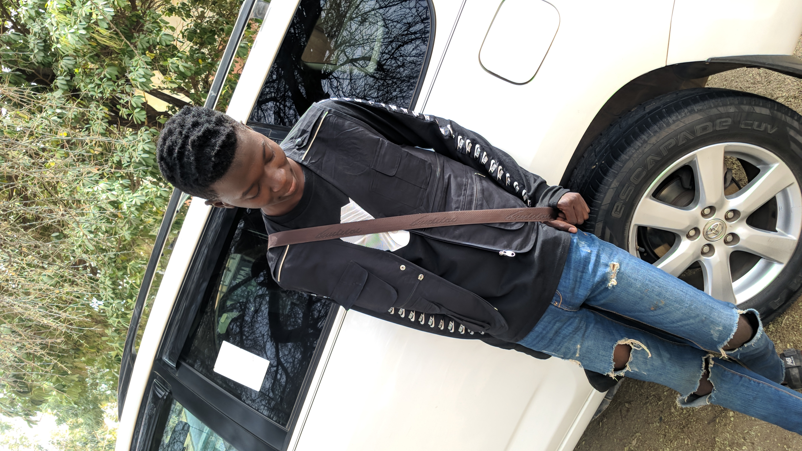

Homefront Start up is an ICT oriented initiative for accommodating and supporting young entrepreneur. it is min-set reengineering program for youth to develop innovative and entreprenuerial skill
Hello
freelance UI/UX designer ,also passionate About making beautiful illustrations and icons
Am AUWAL ISA populary Known as Emperio The Creator [born on 28- 03-2000 at ganye LGA general hospital am a Nigerian Student, Comedian, and a Fashion model AND AM A BLOGGER AT CANDYNAIJA.COM and GISTICON.COM AND ALSO GANYELOADED With active social media presence I has amazed over 8.000 flowers on Instagram as of May 2020. also picked by (Adamawa comedy) live at yola Nigeria. I attended ADAMU SANDA primary school from 2006 and finished in 2011. AND completed MY junior and senior secondary school at Adamu sanda secondary school Ganye, and am now a undergradute Student AT university of maiduguri UNIMAID I study Sociology and Anthropology 200 level AND I grew up in GANYE LGA with my dad My MOM is late that is ALL ABOUT ME.